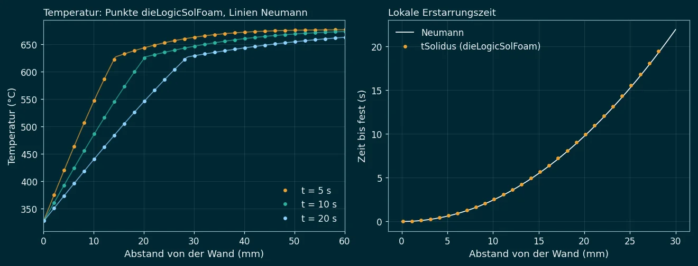
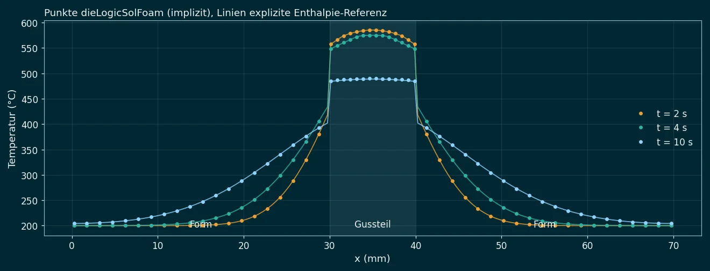

Nach der Füllung rechnet dieLogicSolFoam die Erstarrung des ganzen Schusses
zusammen mit dem Stahl der Form: Gussteil, Anschnitt, Überläufe und Pressrest, die beiden
Formhälften, Einsätze, Kernstifte und den Kolben. Das Ergebnis sind die lokale und die globale
Erstarrungszeit, die Porosität aus Schwindung, Gas und Mikroporen und die Gefahr des Klebens
(Anlöten) an der Form. Über mehrere Schüsse mit Öffnen und Sprühen findet die Form ihren
Zyklusbetrieb. Der Startzustand kommt direkt aus der Füllung mit
dieLogicFoam.
1. Aufgabe
Wenn die Form voll ist, beginnt der Teil des Schusses, der über die Güte des Gussteils entscheidet. Die Schmelze gibt ihre Wärme an die Form ab und erstarrt von der Wand nach innen. Wo ein dicker Bereich von dünnen umgeben ist, bleibt ein heißer Kern übrig: Er schwindet, wenn er fest wird, und wenn der Anschnitt schon zu ist, kann der Kolben keine Schmelze mehr nachdrücken. Dort entsteht Schwindungsporosität. Die Luft, die bei der Füllung eingeschlossen wurde, bleibt als Gasporen zurück, verdichtet vom Nachdruck. Und wo die Form an einer Stelle lange heiß ist und Schmelze berührt, wächst eine Eisen-Aluminium-Schicht: Das Gussteil klebt.
Alle drei Fragen hängen an der Temperatur der Form. Deshalb rechnet der Solver nicht nur das Gussteil mit einem festen Wärmeübergang, sondern die Form als Ganzes mit, mit Kühlkanälen, Kolben und, über mehrere Schüsse, dem Öffnen, Sprühen und Schließen.
| Ergebnis | Felder |
|---|---|
| Erstarrungszeit lokal | tLiquidus, tSolidus, localSolidificationTime (Erstarrungsdauer der Zelle), coolingRate, SDAS (sekundärer Dendritenarmabstand), niyama |
| Erstarrungszeit global | Zeit, zu der das ganze Gussteil und jede Zone (Anschnitt, Platte, Dom, Pressrest, Überlauf) fest ist; solidificationTime ab Beginn der Füllung |
| Porosität | shrinkagePorosity, gasPorosity, microPorosity, porosity, dazu feedingState (gespeist oder abgeschnitten) und pMelt |
| Kleben an der Form | dieSurfaceTmax, solderingTime, solderingIndex |
| Form im Zyklus | T der Form über die Schüsse, Wärmeströme in postProcessing/dieLogicSol/ |
2. Ein Netz für Gussteil und Form
Gussteil und Form sind ein einziges Netz. Jeder Werkstoff ist eine Zellzone: die Legierung für Gussteil, Anschnitt, Überläufe und Pressrest, Warmarbeitsstahl für die Formhälften, eine Kupferlegierung für die Kolbenspitze, eigene Zonen für Kernstifte oder Einsätze. Kühlkanäle sind runde Löcher im Netz mit einem Wärmeübergang an das Wasser: snappyHexMesh schneidet sie aus und legt die Zellen an den Kreis an (eine Treppe aus Zellkanten hätte um 4/π, also 27 %, mehr Fläche zum Wasser). Die Energiegleichung wird für alle Zellen in einer Matrix gelöst; es gibt keine Kopplung zwischen getrennten Gebieten und keine Iteration zwischen Gussteil und Form.
Zwischen zwei Zellen fließt Wärme über den Widerstand der beiden halben Zellen und, an der Grenze Gussteil zu Form, über den Kontaktwiderstand:
Innerhalb eines Werkstoffs ist $1/h = 0$, das ist das harmonische Mittel der Leitfähigkeiten. An der Form ist $h$ der Wärmeübergangskoeffizient der Kontaktfläche. Er ist hoch, solange die Schmelze unter Druck an der Form anliegt, und fällt, wenn die Randschale erstarrt, schwindet und sich ein Luftspalt öffnet:
Der Festanteil $f_s$ ist der der Gusszelle an dieser Fläche. Jede Formzone hat ihre eigenen Werte. Auf einen Kernstift schwindet das Gussteil auf, dort bleibt der Kontakt auch fest gut; von einer ebenen Formwand hebt es ab. An den Rändern des Netzes (Kühlkanäle, Außenflächen, Kolben) gilt $\dot q = (T - T_\infty)/(1/h + d/\lambda)$ mit dem Widerstand der halben Randzelle, damit eine grobe Zelle am Kühlkanal nicht zu kalt wird.
3. Erstarrung und latente Wärme
Der Festanteil der Legierung ist eine Kurve $f_s(T)$: eine Tabelle (zum Beispiel aus CALPHAD), linear zwischen Liquidus und Solidus, oder nach Scheil mit einem eutektischen Intervall. Die Energiegleichung ist
Die latente Wärme ist stark nichtlinear: in einem engen Temperaturbereich wird fast die ganze Wärme frei. In jeder äußeren Iteration wird $f_s$ um den letzten Stand linearisiert (nach Voller und Swaminathan), die Gleichung implizit gelöst und danach die Energieänderung jeder Gusszelle wieder genau auf die Kurve aufgeteilt:
Diese Aufteilung ist auf der stückweise linearen Kurve exakt und kann nicht zwischen flüssig und fest hin- und herspringen, auch wenn eine Zelle den ganzen Erstarrungsbereich in einem Zeitschritt durchläuft. Ohne sie pendelte eine Zelle an der kalten Wand in den ersten Tests zwischen $f_s = 0$ und $f_s = 1$. Für $c_p(T)$ steht die Sekante $\int c_p\,\mathrm{d}T/(T - T^0)$ in der Gleichung; die Energiebilanz schließt deshalb in allen Fällen auf $10^{-8}$ oder besser.
| Werkstoff | Einsatz | Liquidus / Solidus | Schwindung |
|---|---|---|---|
| AlSi9Cu3(Fe), EN AC-46000 | Standardlegierung im Druckguss | 595 / 490 °C | 4,6 % |
| AlSi10MnMg, EN AC-43500 | Strukturguss | 596 / 553 °C | 4,7 % |
| AlSi12(Fe), EN AC-44300 | dünne Wände, nah am Eutektikum | 582 / 572 °C | 3,5 % |
| 1.2343 (H11/H13) | Formhälften, Einsätze, Stifte | λ 24,5 bis 28,5 W/(m K) | |
| CuCoBe | Kolbenspitze | λ 230 bis 250 W/(m K) | |
| Densimet (W-Ni-Fe) | Kernstifte | λ 75 bis 85 W/(m K) | |
Die Daten liegen in materials/ und werden in die Fälle kopiert. Es sind Literaturwerte;
die Kurven $f_s(T)$ sind Näherungen und sollten für eine echte Schmelze aus CALPHAD kommen.
4. Nachdruck, Öffnen, Sprühen
Zeit null ist das Ende der Füllung. Der Nachdruck (Multiplikation) ist eine Zeitfunktion, zum Beispiel von 50 auf 800 bar in 30 ms. Für eine Rechnung über mehrere Schüsse kommen dazu:
- Öffnen: zur eingestellten Zeit wird das Gussteil entnommen; seine Zellen sind von der Form getrennt, die Kavitätenfläche der Form gibt Wärme an die Luft ab.
- Sprühen: im Sprühfenster kühlt das Trennmittel die Kavität mit einem hohen Wärmeübergang.
- Nächster Schuss: zur Zykluszeit schließt die Form, das Gussteil beginnt wieder mit dem Zustand am Ende der Füllung, die Form so warm, wie sie ist.
Der Zeitschritt trifft alle Ereignisse und Schreibzeiten genau und beginnt bei jedem Schuss wieder klein. Bei jedem Öffnen werden die Ergebnisse des Schusses geschrieben.
5. Erstarrungszeiten
Für jede Gusszelle wird festgehalten, wann sie unter die Liquidustemperatur fällt und wann sie ganz fest ist, innerhalb des Zeitschritts interpoliert. Die Differenz ist die lokale Erstarrungszeit $t_f$; aus ihr folgen die mittlere Abkühlrate $(T_L - T_S)/t_f$ und der Dendritenarmabstand $\lambda_2 = A\,t_f^{\,n}$. Die globale Erstarrungszeit ist die Zeit, zu der die letzte Zelle fest wird, für das ganze Gussteil und für jede Zone. Das Niyama-Kriterium $G/\sqrt{\dot T}$ wird bei $T_S + 0{,}1\,(T_L - T_S)$ bestimmt, mit dem Temperaturgradienten nur über Gusszellen.
6. Porosität
Speisung und Schwindung
Schmelze mit einem Festanteil unter $f_{s,\text{Speisung}}$ (0,5 bis 0,7) kann noch fließen. In jedem Zeitschritt wird diese bewegliche Schmelze in zusammenhängende Bereiche zerlegt, auch über die Grenzen der Prozessoren hinweg. Ein Bereich, der den Pressrest erreicht, wird vom Kolben unter Nachdruck gespeist: seine Schwindung wird ersetzt. Ein Bereich, den ein erstarrter Anschnitt oder Querschnitt abgeschnitten hat, kann nicht gespeist werden. Seine Schwindung
wird zu Porenvolumen in der restlichen Schmelze dieses Bereichs, gewichtet mit $(f_{s,\text{Speisung}} - f_s)\,V$. So sammelt sich die Pore dort, wo der Bereich zuletzt erstarrt: im heißen Kern.
Gas aus der Füllung
Die Luft der eingeschlossenen Pakete am Ende der Füllung (aus dieLogicFoam, mit ihrem Paketdruck) wird vom Druck der Schmelze isotherm verdichtet und friert ein, wenn die Zelle erstarrt oder abgeschnitten wird:
Mikroporosität
Jenseits der Speisungsgrenze strömt nur noch wenig Schmelze durch das Dendritennetz. Ihr Druckabfall wächst mit $1/Ny^2$; Poren bilden sich, wenn er den Druck der Schmelze übersteigt. Der kritische Niyama-Wert fällt deshalb mit dem Druck:
Mit $p$ dem Nachdruck, wenn die Schmelze bis zum Erstarren gespeist war, und dem Bezugsdruck, wenn sie in einem abgeschnittenen Bereich lag. Der Nachdruck verhindert Mikroporen dort, wo er die Schmelze erreicht.
7. Kleben an der Form
An jeder Kontaktfläche ergibt sich die Temperatur der Formoberfläche aus dem Kontaktwiderstand. Solange die Gusszelle an der Fläche über dem Solidus liegt und die Oberfläche über einer kritischen Temperatur, wächst eine Eisen-Aluminium-Schicht diffusionsgesteuert:
Der Index wird über die Schüsse aufsummiert, ebenso die Kontaktzeit über der kritischen Temperatur und die höchste Oberflächentemperatur. Ein Index über 1 heißt: hier ist Kleben wahrscheinlich. Typisch sind Kernstifte und die Formfläche vor dem Anschnitt.
8. Übergabe von der Füllung
Das Werkzeug dieLogicSolMapFill überträgt den Zustand am Ende der Füllung auf die Gusszellen:
die Schmelzetemperatur (teilgefüllte Zellen gemischt mit der mittleren Schmelzetemperatur), die Luft der
eingeschlossenen Pakete mit ihrem Druck, die Füllzeit und das Oxid. Zellen außerhalb der Füllrechnung,
etwa der Pressrest, bekommen die nächstgelegene Schmelze. Das Ende der Füllung wird als Zeitversatz
übergeben, damit solidificationTime ab Beginn der Füllung zählt. Am einfachsten wird die Füllung
auf genau den Gusszellen des Erstarrungsnetzes gerechnet, ausgeschnitten mit subsetMesh; dann
ist die Übertragung Zelle für Zelle.
9. Verifikation
Zwei eindimensionale Fälle prüfen den Kern des Solvers gegen Lösungen, die unabhängig von ihm sind.

tSolidus
auf unter 5 %, Energie auf $10^{-12}$.
| Testfall | Prüft | Ergebnis |
|---|---|---|
stefan1D | Front, Profil, tSolidus | bestanden |
conjugateSlab1D | Kontakt, Stoffwerte, Ausgleich | bestanden |
hotSpot2D | Reihenfolge der Erstarrung, Pore im Dom, Kleben am Stift | bestanden |
hotSpot2D_thickGate | dicker Anschnitt speist länger | bestanden |
hotSpot2D_parallel | 4 Prozessoren gleich seriell | bestanden |
dieCycles2D | Aufheizen der Form über 5 Schüsse | bestanden |
plateShot3D | Füllung, Übergabe, Erstarrung in 3D | bestanden |
Die erste Prüfung an einer Messung im Druckguss ist die Stufenprobe nach Guo, Xiong et al.: die Wärme, die das Gussteil an die Form abgibt, trifft die Auswertung der Quelle auf 7 %.
10. Beispiele
Heißer Kern im Schnitt
Ein Schnitt durch beide Formhälften (2D, 0,5 mm Zellen, 91 000 Zellen): der ganze Pressrest (60 mm) auf einer gekühlten Kupferspitze, ringsum im Stahl der Form, Lauf, 2 mm Anschnitt, 4 mm Platte mit einem Dom, in den ein Kernstift ragt, ein Überlauf und sechs runde Kühlkanäle (8 mm, zwei davon neben dem Kolben). Der Anschnitt ist nach 1,87 s fest und schneidet Platte und Dom vom Kolben ab. Der Dom erstarrt als letzter Teil des Gussteils (10,3 s); in seiner Mitte sammelt sich die Schwindung zu einer Pore mit 17 %. Der Pressrest wird bis 19,8 s gespeist und ist nach 23,0 s fest. Die heißeste Formoberfläche und der höchste Klebeindex (2,2) liegen an der Spitze des Kernstifts.
Mit einem 6 mm dicken Anschnitt (hotSpot2D_thickGate) ist der Anschnitt erst nach 2,9 s zu, die
Platte wird länger gespeist und die Schwindungsporen sinken von 22,6 auf 13,9 mm³ je mm Tiefe.
Fünf Schüsse
Dieselbe Form über fünf Schüsse mit 55 s Zyklus: Öffnen nach 40 s, Sprühen von 43 bis 46 s. Die Form startet bei 200 °C. Die höchste Formtemperatur am Ende der Zyklen steigt von 277 auf 358 °C, der Zuwachs je Schuss fällt von 29 auf 14 K; eine Form braucht noch einige Schüsse mehr bis zum Zyklusbetrieb. Mit der wärmeren Form erstarrt jeder Schuss länger: 23,0 s im ersten, 25,3 s im fünften.
Der ganze Schuss in 3D
Eine Platte 120 × 60 × 4 mm mit Dom (16 mm dick) und zwei Überläufen in einem Formblock 160 × 170 × 84 mm, Pressrest auf der Kolbenspitze mit 30 mm Stahl darunter, vier runde Kühlkanäle (8 mm), 1,6 Millionen Zellen (1 mm im Bereich des Gussteils, die Platte vier Zellen dick). Zuerst füllt dieLogicFoam die Plattenebene, ausgeschnitten aus demselben Netz (32 500 Zellen): nach 28 ms ist die Form zu 99 % voll, 0,09 cm³ Luft sind eingeschlossen.
Dann übernimmt dieLogicSolFoam den Zustand auf 6 Prozessoren. Die Überläufe sind nach 1,5 s fest, die Platte nach 4,7 s, der Dom nach 4,8 s, der Pressrest nach 9,3 s. Im Dom bleibt eine Schwindungspore mit 18,8 %; die eingeschlossene Luft der Füllung wird vom Nachdruck auf 0,6 % ihres Volumens verdichtet. Gerechnet in 15 min.
11. Einsatz
Der Solver liegt im Projekt dieLogicSol, mit derselben Ablage wie DieLogic_OF:
Fälle unter cases/, gerechnet als Kopie unter runs/, jeder Fall mit einer Prüfung
check.py. Einen Fall für ein eigenes Gussteil baut die Seite
Erstarrung einrichten im Browser: Formblock, Kolben und Kühlkanäle um die
Gusskörper, Netz, Legierung und Prozess, mit Allrun, Bildern und Bericht.
solvers/Allwmake # dieLogicSolFoam, dieLogicSolMapFill tools/runCase cases/hotSpot2D # Netz, Rechnung, Prüfung in runs/hotSpot2D tools/runTests # alle Testfälle mit Prüfungen dieLogicSolMapFill -source fill # Ende der Füllung auf das Gussteil mpirun -np 6 dieLogicSolFoam -parallel
| Datei | Inhalt |
|---|---|
constant/materialProperties | Legierung und Formzonen mit Zellzonen, $c_p(T)$, $\lambda(T)$, $f_s(T)$, $L$, Dichten |
constant/heatTransferProperties | Kontakt Gussteil zu Form je Formzone, Kontakt zwischen Formteilen, Ränder (Kühlkanäle, außen, Kolben) |
constant/processProperties | Nachdruck, Zyklen mit Öffnen und Sprühen |
constant/defectProperties | Speisung (Pressrest, Grenze), Mikroporosität, Kleben |
12. Grenzen
Die Modellkonstanten (Kontaktkoeffizienten, Speisungsgrenze, kritischer Niyama-Wert, Kinetik des Klebens) sind Werte in der Größenordnung der Literatur, nicht an Gussteilen kalibriert; sie eignen sich zum Vergleich von Formen und Prozessvarianten. Nach der Füllung wird nur Wärmeleitung gerechnet, ohne Strömung im Pressrest. Der Nachdruck ist in einem gespeisten Bereich überall gleich, ohne Druckabfall auf dem Speiseweg; Poren wandern nicht. Der Kontakt hängt nur vom Festanteil ab, ohne Spaltmodell aus der Verformung. Jeder Schuss einer Zyklusrechnung beginnt mit demselben Zustand am Ende der Füllung. Getestet sind Hexaedernetze aus blockMesh, an den runden Kühlkanälen mit snappyHexMesh angepasst (in 3D ein extrudierter Querschnitt).